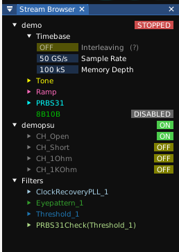

The stream browser is the primary navigation pane for quick access to instrument settings and channels. By default in a new ngscopeclient session it is docked to the left side of the window but it can be repositioned as needed.

NOTE: The stream browser is one of the more recent additions to ngscopeclient and is undergoing rapid development. Some changes to appearance and interaction metaphors should be expected in upcoming versions as we unify the user interface to be more consistent for all types of instrument.
The "filters" node contains a list of all filter graph blocks active in the current session. Expanding the node for a given filter will show a list of output streams.
The node for each instrument contains a list of all channels on the instrument, whether enabled or not. Depending on the type of instrument, additional nodes with commonly used settings such as timebase configuration may be available.
Color coded “badges" are displayed in the right margin next to channels or instruments in some cases, displaying context-dependent information such as trigger state, power supply or signal generator on/off status, etc. These badges are clickable to change the relevant setting.
Instrument channels, filters, and streams can be dragged from the browser to other parts of ngscopeclient in order to visualize or interact with data from them. For example: